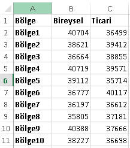

Tanımlama(Declaration)
Diziler, normal değişkenler gibi Dim ifadesi ile
tanımlanırlar, ancak değişken adının yanında fazladan yuvarlak parantezlere
sahiptirler. Parantezler; dizi boyutu baştan belliyse boyut numarasını
içerirler, belli değilse boş bırakılır ve sonradan tanımlanır. Dizi boyutu
baştan belirlenen dizilere Statik dizi, boyutu baştan
belirtilmeyen dizilere Dinamik dizi denir.
Dim diziadı(boyut) As Tip
Tip belirtilmezse tıpkı normal değişkenlerde olduğu gibi dizimiz
Variant tipli bir dizi olur ve her tür değişkeni karışık olarak
depolayabilir.
Dim bölgeler(19) As String 'boyut belirtildi
Dim şubekod() As String 'boyut belirtilmedi
Bu örnekte bölge sayısı sabit olduğu için boyut baştan belirtildi, yani
Statik tanımlandı ancak
bir bankada şube sayısı çok sık değişebilir; yeni şubeler açılır, mevcut
şubeler kapanır, şubeler birleşir;o yüzden ona baştan bir boyut belirtmesek
de olur, yani Dinamik tanımlandı. Bu dinamik dizilere aşağıda ayrıca bakıyor olacağız.
Boyut(elaman sayısı), index, alt/üst limitler
Dizi için tanımlanan eleman sayısına boyut denir. Boyut belirtmenin de iki yolu vardır.
- Dim dizi(x to y) As Tip
- Dim dizi(y) As Tip
İlk yöntemde dizinin kaçıncı indexten başlayıp kaçta biteceği
belirtilirken ikinci yöntemde ise doğrudan kaçta biteceği belirtilir, kaçta
başlayacağı ise Option Base ifadesinin
kullanılıp kullanılmadığına göre değişir. İndeksin biteceği son yere üst
sınır denir ve bu sınır Ubound fonksiyonu
ile elde edilir.
Dim segmentler(4) As String
segmentler(0)="Bireysel"
segmentler(1)="Birebir"
segmentler(2)="Kobi"
segmentler(3)="Ticari"
'segmentler(4)="Özel"
For i=0 to UBound(segmentler)
MsgBox segmentler(i)
Next i
Yukardaki örnekte gördüğünüz üzere son indexli elamana değer atanmadı, bu
yüzden de boş olarak göründü. Anlayacağınız üzere, dizideki tüm elemanlara
değer atanmak zorunda değildir. Yani, bir dizide eleman sayısı ile dolu(değer
atanmış) eleman sayısı aynı olmayabilir.
Varsayılan olarak dizilerin ilk eleman indeksi 0'dır. Ancak bu index
Option Base 1 ifadesi ile 1 yapılabilir, ki
ben bunu zorunda olmadığınız sürece çok kullanmanızı tavsiye etmiyorum. Veya
yukarda 1. yöntemdeki gibi dizi boyutu
baştan 1 to y şeklinde belirtilerek de başlangıç indexi 1
yapılabilir. Yani şu iki ifade tamamen özdeştir.
Option Base 1
Dim bolgeler(20) As String
ve
Dim bolgeler(1 to 20) As String
İndex numarası açısından olmasa da eleman sayısı açısından şu dizi de
yukardakilerle aynı kapasitededir, yani hepsi de 20 eleman içerir.
Dim bolgeler(19) As String
Dizi tanımının yönteminden ve Option Base
kullanımından bağımsız olarak alt indexin ne olduğu ise
LBound fonksiyonu ile elde edilir.
Option Base 1 kullanımını tavsiye etmiyoruz dedik, zira
ilgili modüldeki tüm prosedürler için indexi 1den başlatır. Bununla beraber
bazı dizileri bilinçli olarak 1 nolu indeksten başlatmak gerekebilir. Mesela
ayno isimli bir dizimiz olduğunu düşünün, ayno(1) diyince Ocak ayını ele
almak, anlaşılırlık açısından daha makbuldür, pek tabiki ayno(1) içinde
Şubat ayı da depolanabilir ancak bu yol, konuşma diline biraz aykırılık teşkil
edeceği için bunu ayno(1 to 12) şeklinde tanımlamayı tercih etmek daha
akıllıca olacaktır.
Bu arada x to y yönteminde x olarak 1'den büyük değerler
de belirtilebilir ama bunun pratikte çok kullanıldığı görülmez.
Çok boyutlu dizilerde eleman sayısı, boyutlardaki elemanların çarpımına
eşittir.(Bunlar aşağıda ayrıca detaylı incelenecek)
Özetleyecek olursak;
Dim b(10) As String şeklinde tanımlanan 1 boyutlu bir dizide;
| Aranan |
Yöntem |
Sonuç |
| Alt limit |
LBound(b) |
0 |
| Üst limit |
UBound(b) |
10 |
| Eleman sayısı |
Ubound(b)-LBound(b)+1 |
11 |
Dim b(1 to 10) As String şeklinde tanımlanan 1 boyutlu bir başka dizide;
| Aranan |
Yöntem |
Sonuç |
| Alt limit |
LBound(b) |
1 |
| Üst limit |
UBound(b) |
10 |
| Eleman sayısı |
Ubound(b)-LBound(b)+1 |
10 |
Dim b(10,5) As Integer şeklinde tanımlanan 2 boyutlu bir dizide;
| Aranan |
Yöntem |
Sonuç |
| 1.boyutun Alt limiti |
LBound(b,1) |
0 |
| 1.boyutun Üst limiti |
UBound(b,1) |
10 |
| 2.boyutun Alt limiti |
LBound(b,2) |
0 |
| 2.boyutun Üst limiti |
UBound(b,2) |
5 |
| 1.boyutun Eleman sayısı |
Ubound(b,1)-LBound(b,1)+1 |
11 |
| 2.boyutun Eleman sayısı |
Ubound(b,2)-LBound(b,2)+1 |
6 |
| Dizideki Eleman sayısı |
1. boyut elaman sayısı*2.boyut eleman sayısı |
66 |
Dikkat:Bir dizinin boyutu baştan birkez
belirtilirse bir daha asla değişmez. Boyutu değişen dizilere ise aşağıda
değineceğiz.
Elemanlara değer atama
İlk değer atama
Dizi elamanlarına index numaralarıyla ulaşırız. Normalde bunlara tek tek
değer atamak genelde pratikte karşılaşılan bir durum değildir, belki küçük
boyutlu dizilerde olabilir ancak genelde bir döngüsel yapı ile bir hücre
grubundan değer okuyup onları atamak şeklinde olmaktadır. Aksi halde kodumuz oldukça
uzayacaktır.
Dim Segment(3) As String
Segment(0) = "Bireysel"
Segment(1) = "Birebir"
Segment(2) = "Kobi"
Segment(3) = "Ticari"
Döngüyle atamaya örnek olarak da şunu verebiliriz;A1:A20 arasındaki bölge
kodlarını bölge dizisine atıyoruz.
For i=1 to 20
bölge(i)=Cells(i,1).Value2
Next i
Değer atanmamış elemanlar ve Erase fonksiyonu
Henüz değer atanmamış dizi elemanları, dizinin tipine göre default
değerlerini alırlar. Bunlar;
- String diziler için sıfır uzunluklu metin, yani ""
- Nümerik diziler için 0
- Variant diziler için Empty
- Object diziler için Nothing
Statik dizilerde elemanların hepsini tek seferde varsayılan değerlerine
döndürmek için Erase fonksiyonu kullanılır.
Yani dizi elemanlarının taşıdığı değerler boşaltılır. Ancak bunlar hala
hafızada yer kaplamaya devam ederler.
Sub erasestatik()
Dim segment(2) As String
segment(0) = "bireysel"
segment(1) = "birebirt"
segment(2) = "kobi"
Erase segment()
Debug.Print segment(1) '"" döndürür
End Sub
Array fonksiyonu
Elle tek tek tanımlama yapılması gereken durumlarda, bir diğer eleman
tanımlama yöntemi de Array fonksiyonunu
kullanmaktır, ki bu sadece elaman değeri atama değil aynı zamanda
diziyi tanımlama yöntemidir de. Zira bu şekilde tanımlanan diziler Variant
tipte olurlar ve bildiğiniz gibi Dim ile tanımlanmayan
tüm değişkenler Variant kabul edilirler. Bu sayede elemanlar tanımlanırken dizi de
yaratılmış olur. Ama biz yine de iyi bir programcı olup dizimizi Dim ile tanımlayalım. Bu yöntemle tanımlanan dizilerde başlangıç
indeksi her zaman 0 olur. Yine, bu yöntemle yaratılan diziler 1 boyutlu olur
Dim Segment As Variant
Segment = Array("Bireysel","Birebir","Kobi","Ticari") 'tek satırda tanımlama imkanı
Debug.Print Segment(2) 'Kobi yazar
Bu yöntemin pratik bir kullanımı "ayisim" gibi bir fonksiyon şeklinde
kendini gösterebilir. Fonksiyonlarla kafanızı karıştırmamak için şimdilik Sub prosedür şeklinde örneğe görelim.
Sub ayisimornek()
Dim ayisim As Variant
ayisim = Array("", "Ocak", "Şubat") 'ilk ayı boş geçtim, index 0 olduğu için
Debug.Print ayisim(2)
End Sub
Dizi içinde dolaşma ve elemanlara erişim
Dizilere eleman atama işini döngülerle yaptığımız gibi, dizi elamanlarını
okumayı da yine genelde döngülerle yaparız. Ender olarak kod içinde bir yerde bir
index numarası temin edip onu doğrudan da kullandığımız da olur.
For i=1 to 20
Cells(i,1).Value2=bölge(i)
Next i
Daha şık şekli aşağıdaki gibi olabilir, hatta sadece şık değil aynı
zamanda güvenlidir de.
For i=LBound(bölge) to UBound(bölge)
Cells(i,1).Value2=bölge(i)
Next i
Evet, biraz daha fazla kod yazmış olduk ama
güvenlik ön planda olacaksa hard-code(rakamı doğrudan belirterek) alt-üst
limit vermek yerine bu fonksiyonlarla vermek daha verimlidir. Hard-code
yazıldığında, bölge sayısı 1 arttığında 20
yerine 21 yapmayı unutursanız kodunuz yine hata almadan çalışır ancak eksik çalışmış olur, ve
belki akabinde çalışan kodlarla bölgelere otomatik mail gidiyorsa, son
bölgeye hiç mail gitmemiş olur. Bir de içiçe bir dizi varsa ve her seviye
için üst limit değişiyorsa Ubound'ı kullanmak zaten zaruri olacaktır.
Üstelik bu yazım şekli alt limitin 0 mı 1 mi olduğunu da pek önemsemez .
Böylece Option Base var mıydı yok muydu, diziyi (1 to 20) şeklinde mi yoksa (20)
şeklinde mi tanımladığınızı hatırlamak zorunda kalmazsınız.
dikkat:Dizi içinde For döngüsü ile
dolaşırken diziye eleman atama işlemi sadece For i=1 to 10 şeklindeki basit
For döngüsü ile yapılabilirken, eleman değerini okuma işlemi ise hem basit
For ile hem de For Each ile yapılabilir.
Mesela aşağıdaki gibi bir kullanım sorunsuz çalışırken,
Dim Bölge(1 to 20) As String
For i=1 to 20
bölge(i)=Cells(i,1).Value2
Next i
bu kod da hata vermeden çalışır ancak eleman değerlerinin değişmediğini görebilirsiniz. (Eğer daha önce bir değer atanmadıysa içleri boş görünecektir.)
Dim Bölge(1 To 20) As String
For Each b In Bölge
b = ActiveCell.Value2
ActiveCell.Offset(1, 0).Select
Next b
Dinamik diziler
Yukarıdaki örnekler hep statik dizi örnekleriydi(Array fonksiyonu ile tanımlananlar
hariç)
Dizimizin boyutunu baştan bilmiyorsak ve kodun gidişatına göre değişken bir
şekilde karşımıza çıkma durumu varsa, diziyi boyutsuz yani dinamik tanımlarız
ve zamanı geldiğinde boyutunu belirtiriz. Bunu da ReDim
ifadesi ile yaparız.
Aslında yaptığımız şey, yeni bir statik dizi yaratmaktır. Zira
ReDim kullanıp da yeni boyutunu verdiğimiz diziyi yine yeterli bulmazsak
tekrar boyut değiştirebiliriz.
Dim şubeler() As String
....
....
ReDim şubeler(800)
Statik dizilerde, genelde kaynak
israfı sözkonusudur, zira baştan olası en
yüksek değere göre boyut belirlenir ve bu boyutların hepsi çoğu zaman
kullanılmaz. Tabiki bölge sayısı gibi kesin olarak bilinen ve hepsi
kullanılan durumlar istisnadır. Bu nedenle genel olarak Statik değil Dinamik
dizi kullanılması önerilir.
Erase fonksiyonu
Dinamik dizilerde Erase fonksiyonu statik
dizilerden farklı çalışır. Statik dizilerde Erase, elemanları default
değerlerine atarken dinamik dizide diziyi boyutsuzlaştırır, yani bir nevi
siler. Diziyi tekrar kullanmak isterseniz ReDim ile yeniden boyutlandırmanız
gerekir.
İlave boyut artışı
Diyelim ki ReDim ile 10 elemanlık bir boyutlandırma yaptınız ancak öyle
bir nokta geldi ki, 10 eleman yetmiyor, yani boyut artırmanız lazım, böyle
bir durumda ReDim Preserve ifadesini
kullanırız. Preserve demezsek dizi yine yeni boyuta göre boyutlanır ancak
önceki elemanlar silinmiş olur. Preserve ile ilk 10 elemanın değerini de
korumuş oluruz.
Boyut artırma durumların ReDim'in bir veya iki kez kullanılması önerilir. Birkaç kez boyut artırma ihtiyacı oluyorsa belki dizi değil de Collection kullanmak faydalı olabilir.
NOT:Variant olarak tanımlanan değişkenler doğası gereği dinamiktirler.(Variant
tanımlanan diziler ise statiktir)
Dim statikVar As Variant 'standart Variant değişken
Dim dinamikVar(5) As Variant 'Variant tipli dizi
Variant değişken vs Variant dizi
Variantlarla ilgili detaylı bir örnek aşağıda bulunmaktadır. Bunun
oldukça aydınlatıcı olduğunu düşünüyorum.
Sub variantlı()
Dim aylar1 As Variant 'içine istediğiniz tipte değer atayabileceğiniz bir DEĞİŞKENDİR, buna dizi de dahildir,
'ama dizi atayana kadar dizi değildir ve IsArray testi false döner. Ubound da kullanamazsınız
Dim aylar2() As Variant 'Parantez olduğu için bu kesinlikle DİZİDİR, IsArray true döner
'***öncelikle parantezsiz olan yani değişken olan Aylara bakalım*****
aylar1 = 1 'number atandı
Debug.Print aylar1
'Debug.Print aylar1(1) 'hata verir, çünkü içeriği henüz bir dizi değil.
Debug.Print IsArray(aylar1) 'false
'Debug.Print UBound(aylar1) 'çalışmaz çünkü şuan için dizi değil
aylar1 = "volki" 'string
Debug.Print IsArray(aylar1) 'yine false
Debug.Print aylar1
aylar1 = Now 'tarih
Debug.Print IsArray(aylar1) 'hala false
Debug.Print aylar1
aylar1 = Array("hi", "world", "naber") 'dizi
Debug.Print IsArray(aylar1) 'artık true, çünkü Array function ile array yaptık
Debug.Print UBound(aylar1)
Debug.Print aylar1(2) 'artık hata vermez, çünkü içeriği bir dizi
aylar1 = Array(Array("hi", "world", "naber"), Array(1, "ss", 3)) 'dizi dizisi
Debug.Print UBound(aylar1)
Debug.Print aylar1(1)(1)
aylar1 = Range("a1:a5").Value ' range atadık, 2 boyutlu dizi
Debug.Print UBound(aylar1) '5 döner
Debug.Print aylar1(2, 1) '2.satırdaki değer döner
'***şmdi de Dizi olan Aylara bakalım
Debug.Print IsArray(aylar2)
'Debug.Print UBound(aylar2) hata verir, zira henüz boyut belli değil, ya ReDim yapılmalı ya da Array ile değer atanmalı
ReDim aylar2(3)
Debug.Print UBound(aylar2)
aylar2 = Array("OCAK", "ŞUBAT", "MART", "NİSAN", "MAYIS", "HAZİRAN", "TEMMUZ", "AĞUSTOS", "EYLÜL", "EKİM", "KASIM", "ARALIK") '
Debug.Print UBound(aylar2)
Debug.Print aylar2(2)
Debug.Print UBound(aylar2)
'şimdi de farklı data tiplerinde atama yapıyoruz, Variant olduğu için sorun olmuyor
aylar2 = Array("OCAK", 2, 3, "30.04.2015", Now + 60, "HAZİRAN", "TEMMUZ", "AĞUSTOS", "EYLÜL", "EKİM", "KASIM", "ARALIK") ' variant olduğu için içine karışık tipli verilen atayabilirm
Debug.Print aylar2(4)
End Sub
Çok boyutlu diziler
Şimdiye kadar gördüğümüz dizilerin çoğu tek boyutlu idi, ama ihtiyacımıza
göre birden fazla
boyutlu diziler de oluşturabiliyoruz. Pratikte üçten fazla boyutun
kullanıldığını ben açıkçası ne duydum ne de gördüm. Şahsen kendi kodlarımda
kullandığım dizilerin büyük kısmı tek boyutludur, birkaç tane 2 boyutlu bir
tane de 3 boyutlu dizim bulunmakta. 3 boyutlu dizi örneğinde aynı zamanda
Dictionary de kullandığım için bu örneği o bölümde ele alacağız.
Şimdi 2 boyutlu bir dizi kullanım örneğine bakalım. Excel sayfalarının
kendileri zaten satır ve sütunlardan oluşmakta olup 2 boyutludurlar ve bu
durumu 2 boyutlu dizilerle birlikte çok sık kullanıyor olacağız.
Mesela 10 bölgesi olan bir bankada her bölgenin bir Bireysel bir de
Ticari müdürü olduğunu düşünelim. Bunları bir diziye atama işlemi nasıl
oluyor ona bakalım.

Sub ikiboyutludizi()
Dim mudur(1 To 10, 1 To 2) As Long 'ilk boyut bölge için, ikinci boyut segment tipi için
Dim i As Integer, j As Integer
For i = LBound(mudur, 1) To UBound(mudur, 1)
For j = LBound(mudur, 2) To UBound(mudur, 2)
mudur(i, j) = Cells(i + 1, j + 1).Value
Next j
Next i
Debug.Print mudur(3, 2)
End Sub
Tabi bunun için aşağıda başka bir yöntem var
ki, bundan çok daha basittir.
İçiçe diziler(Dizi dizileri)
İngilizcede Array of Array ve Jagged Array olarak kullanılan bu dizi
türünü Variant tipte dizi tanımlayarak elde ederiz. Bilindiği gibi Variant
veri tipi içinde herşeyi tutabilir, buna diziler de dahildir. Yanlız burdaki
ayrıma dikkat etmek lazım, klasik Variant bir değişken tanımlamıyoruz,
Variant tipli bir dizi tanımlıyoruz. Aradaki ayrımı görmek için şu iki
satıra bakalım:
Dim d As Variant 'bu Variant tipli klasik bir değişkendir
Dim d() As Variant 'bu ise Variant tipli bir dizidir
İçiçe dizilerin tanımlaması iki ayrı dizi şeklinde olur, ama kullanımı dizi(x)(y)
şeklindedir. Yani aslında bu dizi türü tek boyutludur ama içerdiği her
elaman da bir başka dizidir.
Dim dışdizi() As Variant 'ana dizi Variant olmalıdır
Dim içdizi() As String ' Alt dizinin Variant olması gerekmez
'iç diziyi dış diziye eleman olarak atama
dışdizi(n)=içdizi
'nihai kullanım şekli
Debug.Print dışdizi(x)(y)
Bu dizilerin kullanımı çok boyutlu dizilere benzer ancak, kullanım
ihtiyacı ve şekli küçük farklar göstermektedir. Şöyle ki, çok boyutlu
dizilerde tümboyutlar için hafızada yer ayrılır, belki o boyutlardan bazısı
hiç kullanılmayacak bile. Diyelim 20 bölgeli bir banka var, bazı bölgelerde
40 şube varken bazısında 15 şube bulunabilir. Şimdi Şubeler(1 to 20, 1
to 40) şeklinde 2 boyutlu bir dizi tanımlarsak bazı bölgelerde bazı boyutlar israf olacak. İşte içiçe
dizilerde bu israf olmuyor. Örneğin 2.bölgenin şube sayısı 18 ise, burdaki
18.şubeyi tanımlayacak son elaman bölge(2)(18) oluyor, bölge(2)(19) şeklinde
bir tanımlama yapılmıyor.
Mesela aşağıdaki tabloya göre içiçe dizimizi oluşturalım.
Sub içiçedizi()
Dim bolge(1 To 3) As Variant 'dış dizi
Dim subeler() As String 'iç dizi
Dim i As Integer, s As Integer, k As Integer
For i = 1 To 3
ReDim subeler(1 To Cells(i + 1, 2)) 'iç dizinin boyutunu ayarlıyoruz, her bölgede bu boyut değişecek
'iç diziyi oluşturalım
For s = 1 To UBound(subeler)
subeler(s) = Cells(s + k + 1, 6)
Next s
k = k + s - 1 'satır sayısı resetlenmesin diye geçici bir değişkene atıyorum
'iç diziyi dış dizinin ilgili elemanına atayalım
bolge(i) = subeler
Next i
Debug.Print bolge(1)(5) 'Şube5
Debug.Print bolge(2)(2) 'Şube8
Debug.Print bolge(3)(4) 'hata verir, çünkü 3.bölgenin 4.şubesi yok
End Sub
Dizi dizisiyle yapılabilen işlemler "Collection of Collection" veya
"Dictionary of Dictionary" yapılarıyla da yapılabilir. Bunları bir sonraki
bölümde görüyor olacağız. Bu arada hepsinin avantaj ve dezavantajını anlatan
güzel bir sayfa var, ona
buradan ulaşabilirsiniz.
Rangeler ve Diziler
Bir hücre grubunu diziye atama(Sayfadan okuma)
Dizileri, bir hücre grubundan hızlı veri okuma ve yazma amacıyla da
kullanırız. Bu kullanım şekli, özellikle ilgili veri kümesi üzerinde bir güncelleme(belli
bi rakamla çarpmak gibi) yapmak
istediğinizde idealdir.
Tabi bu amaçla kullanmak istediğimizde standart dizi tanımı yerine
Variant olarak tanımlarız, ve tanımladığımız dizi
2 boyutlu bir dizi
olur. Zira bir sayfaya baktığınızda gördüğünüz şey satır ve sütunlardan
oluşan iki boyutlu bir dizidir. Böyle bir dizide de ilk boyut satır
ikinci boyut sütun olur. Bu noktada karışıklığa neden olan bir konu vardır
ki o da şudur:
Sözkonusu hücre grubu tek kolonluk bir alandan oluşuyorsa bile iki
boyutludur. İlk boyut satır sayısı kadar elemanlı, ikinci grup da sütun sayısı olan
1 elamanlıdır. Bu tür dizilerde indeks 0dan değil 1den
başlar.(Tek boyutlu variant dizilerde ise 0'dan başlıyordu)
Mesela aşağaıdaki kod ile A1:A1000 hücrelerindeki değerler 100 ile
çarpılır.
Sub rakamguncelle()
Dim rakamlar As Variant 'Dizi tanımı
rakamlar = Range("A1:A10000").Value 'burada hücreden diziye okuma yaptık
For i = LBound(rakamlar) To UBound(rakamlar) 'i'ler satır boyutudur
rakamlar(i, 1) = rakamlar(i, 1) / 100 '1 ise sütun boyutu
Next i
Range("A1:A10000").Value = rakamlar 'üzerine de yazabilriz başka bir yere de yazabilirdik
End Sub
Alanımız tek kolon değil de birden çok kolondan oluşuyorsa sütun için de
bir iç döngü daha eklememiz gerekir. Bu sefer hücre grubumuzu dinamik
düşünelim, buna göre kodumuzu aşağıdaki gibi olacaktır.
Dim rakamlar As Variant 'Dizi tanımı
rakamlar = Selection.Value 'burada hücreden diziye okuma yaptık
For i = LBound(rakamlar) To UBound(rakamlar) 'i'ler satır boyutudur
For j = LBound(rakamlar, 2) To UBound(rakamlar, 2) 'j'ler satır boyutudur
rakamlar(i, j) = rakamlar(i, j) * 1000
Next j
Next i
Selection.Value = rakamlar
Tek boyutlu bir diziyi sayfaya yazdırma
Yazdırma işlemi yapmak için Resize özelliği ile hücreleri yeniden
boyutlandırmayı bilmeniz gerekiyor. Resize hakkında bilgi sahibi değilseniz
buradan bakıp önbilgi
edinebilirsiniz.
Bu işlem için bir Range nesnesi yaratırız ve sonra hedef
hücreyi belirleriz. Sonra bu hücreyi Resize ile dizi boyutu kadar
genişletiriz.
' Yatay yazma(Tek satırlı çok kolonlu)
Dim dizi(1 To 3) As Integer
Dim Hedef As Range
dizi(1) = 10
dizi(2) = 20
dizi(3) = 30
Set Hedef = Range("A1").Resize(1, UBound(dizi))
Hedef.Value = dizi
Eğer dizimizi dikey şekilde yani tek kolon çok satırda yazmak isteseydik,
Resize argümanlarını ters çevirmemiz ve Transpose metodunu kullanmamız
gerekirdi.
' Dikey yazma(Tek kolonk çok satır)
Dim dizi(1 To 3) As Integer
Dim Hedef As Range
dizi(1) = 10
dizi(2) = 20
dizi(3) = 30
Set Hedef = Range("A1").Resize(UBound(dizi), 1)
Hedef.Value = WorksheetFunction.Transpose(dizi)
İki boyutlu dizileri sayfaya yazdırma
İki boyutlu bir dizimizi sayfaya yazdırmak istiyorsak yine Resize
metodunu kullanırız, ilk boyutu satır olarak, ikinci boyutu da kolon olarak
kullanabiliriz, veya tam tersini de istersek yerlerini değiştirip Transpoze
yaparız.
Dim dizi(1 To 3, 1 To 2) As Integer
Dim alan As Range
dizi(1, 1) = 10
dizi(2, 1) = 20
dizi(3, 1) = 30
dizi(1, 2) = 100
dizi(2, 2) = 200
dizi(3, 2) = 300
Set alan = Range("A1").Resize(UBound(dizi, 1), UBound(dizi, 2))
alan.Value = dizi
Transpoze hali de şöyle:
Dim dizi(1 To 3, 1 To 2) As Integer
Dim alan As Range
dizi(1, 1) = 10
dizi(2, 1) = 20
dizi(3, 1) = 30
dizi(1, 2) = 100
dizi(2, 2) = 200
dizi(3, 2) = 300
Set alan = Range("A1").Resize(UBound(dizi, 2), UBound(dizi, 1))
alan.Value = WorksheetFunction.Transpose(dizi)
Dizilerin diğer kullanma şekilleri
Dizileri dizilere atama
Gelişmiş programlama dilllerinde olduğunun aksine VBA'de bir diziyi tek
seferde başka bir diziye kopyalama/atama yöntemi bulunmamaktadır. Yani şöyle bir kod çalışmaz.
Dim A(1 To 3) As Long
Dim B(1 To 3) As Long
A(1)=100000
A(2)=200000
A(3)=300000
B=A
Peki nasıl yapılır? Tabiki döngülerle;
Dim A(1 To 3) As Long
Dim B(1 To 3) As Long
A(1)=100000
A(2)=200000
A(3)=300000
For i=1 to 10
B(i)=A(i)
Next i
Debug.Print B(2)
Variant dizileri Variant dizilere atama
Dizileri başka dizilere atayamıyoruz ancak içi dizi olan bir Variantı
başka bir Varianta atayabiliyoruz. Zira, bu işlem aslında dizi atama değil
değişken atamadır.
Dim A As Variant
Dim B As Variant
A = Array(100000, 200000, 30000)
B=A 'atama başarılıdır
Debug.Print B(2) '30000 yazar
Range atanmış Variant dizileri normal dizilere atama
Bir hücre grubunu doğrudan bir variant diziye atama şeklini yukarda
görmüştük, ama bir şekilde bunları tek boyutlu bir diziye atamanız gerekirse
bunu yapmanın yolu döngü kullanmaktır. Tabi istenirse arada hiç variant dizi
olmadan da doğrudan ilgili alanlar üzerinden de geçilebilir ancak, eğer bir
şekilde ilgili alan kod içinde silindiyse, veya büyük bir alan ise peformans
sorunu yaşamamak için Variant diziden normal diziye atamak daha verimli olacaktır,
zira diziler üzerindeki işlemler range'lere göre çok daha hızlıdır.
Şimdi
aşağıdaki gibi bir hücre grubu olsun,
bunu önce Varianta sonra da normal bir diziye atayalım.
Sub birkolonlu_variant_to_dizi()
Dim var As Variant
Dim dizi() As String
Dim i As Integer
var = Range("B2:B10").Value2
ReDim dizi(1 To UBound(var, 1))
For i = 1 To UBound(var, 1)
dizi(i) = var(i, 1)
Next i
MsgBox dizi(3)
End Sub
Şimdi bunu bir de çok boyutlu dizide yapalım
Sub çokkolonlu_variant_to_dizi()
Dim var As Variant
Dim dizi() As String
Dim s As Integer, k As Integer, i As Integer
var = Range("B2:D10").Value2
ReDim dizi(1 To UBound(var, 1) * UBound(var, 2))
s = 0
For k = 1 To UBound(var, 2)
For i = 1 To UBound(var, 1)
dizi(i + s) = var(i, k)
Next i
s = s + UBound(var, 1) 'her boyut geçişinde tekrar başa dönmesin diye aratoplam alınır
Next k
MsgBox dizi(15)
End Sub
Aynı diziyi iki boyutlu bir standart diziye atamak da aşağıdaki gibi
olurdur.
Sub çokkolonlu_variant_to_çokboyutludizi()
Dim var As Variant
Dim dizi() As String
Dim s As Integer, k As Integer, i As Integer
var = Range("B2:D10").Value2
ReDim dizi(1 To UBound(var, 1), 1 To UBound(var, 2))
For k = 1 To UBound(var, 2)
For i = 1 To UBound(var, 1)
dizi(i, k) = var(i, k)
Next i
Next k
MsgBox dizi(2, 3)
End Sub
Dizileri collectiona atama
Bazı durumlarda elimizdeki diziyi daha fazla esnekliği olan ve bazı
yönlerden dizilere benzeyen collectionlara atamak isteriz. Ancak colletion
konusunu henüz işlemediğimiz için(siteyi sırayla okuduğunuz varsayımıyla
hareket ederek) bu durumu collection
sayfasında ele alacağız.
Dizileri bir prosedüre parametre olarak gönderme
Dizileri bir Sub veya Function prosedüre parametre olarak
gönderebiliriz. Unutulmaması gereken nokta, diziler her zaman ByRef
anahtar kelimesi ile gönderilir. Aşağıda basit bir örneğimiz bulunuyor.
Sub dizigonder()
Dim d(5) As String
'sadece iki elemanı dolduralım
d(0) = "volkan"
d(1) = "meltem"
Call mesajver(d)
End Sub
Sub mesajver(ByRef dz() As String)
For Each a In dz
If a <> "" Then i = i + 1
Next a
eleman = UBound(dz) - LBound(dz) + 1
MsgBox eleman & " adet elemanın " & i & " tanesi doludur"
End Sub
Prosedürden sonuç olarak dizi döndürme
Fonksiyonlar konusunda göreceğimiz gibi,
genelde bir fonksiyondan
sadece tek bir değer döndürülür. Aslında bu birçok yerde doğru diye
anlatılan yanlış bir bilgidir. Genelde durum böyledir ancak fonksiyonlar tek bir değer döndürmek
zorunda değildir, sadece dönüş değeri tek olmak zorundadır. Zira gerek ByRef kullanımı, gerek
dönüş değerinin dizi/collection olması sayesinde
fonksiyonlar pekala çoklu
değer döndürebilirler. Aşağıdaki örnekte çoklu değer olarak dizi
döndürüyoruz.
SSub diziata()
'boyutsuz dizi yaratılır
Dim d() As Integer
d = dizidondur '6 değerli bir dizi döner, istediğimizi kullanırız
Debug.Print d(3)
End Sub
Function dizidondur() As Integer() 'dönen değer tipi () ile biter ki dizi döndürdüğü anlaşılsın
Dim dizim(0 To 5) As Integer
For x = 0 To 5
dizim(x) = 10 * x
Next x
dizidondur = dizim
End Function
Split ve join
Split
Dizilerle kullandığımız çok faydalı iki fonksiyon vardır.
Bunlardan ilki Split fonksiyonudur.
Bununla, belirli bir ayraçla birleşmiş olan bir String ifade parçalara
ayrılarak bir Variant içine veya klasik bir dizi içine aktarılır.
Gördüğünüz gibi bu da aslında bir nevi dizi tanımlama yöntemi
olmaktadır.
Bu fonksiyon, genelde bir hücreden ";" veya "," ile ayrılmış
elemanları tek tek elde etmek için kullanılır.
Sub splitornek()
Dim s As String
s = "35516;37770;34234"
Dim dizi As Variant 'veya Dim dizi() as String şeklinde boyutsuz dizi
dizi = Split(s, ";")
Debug.Print dizi(0) '35516 döner
End Sub
Bu Split fonksiyonunu kullanarak bir UDF yazmıştım, ki
bu sayfayı yazarkenki en yüksek Excel sürümü olan Excel 2016 içinde bile bu fonksiyon
hala yerel olarak bulunmuyor. Bunu anlamak gerçekten zor, zira çok
ihtiyaç duyulan bir fonksiyon olduğunu düşünüyorum. Neyseki VBA ve UDF
var da başımızın çaresine bakabiliriyoruz.
Bu
fonksiyon, bir metindeki belirtilen indeksteki kelimeyi seçiyor. Ayracı
default olarak " " yani boşluk belirledim, ancak isteyen farklı bir ayraç
da belirleyebiliyor. İşte bu fonksiyonum:
Function kelimesec(hucre As Range, kaçıncı As Byte, Optional ayrac As String = " ")
'normal bir cümlede ayrac boşluk olacağı için ayracı girmeye gerek yok, zaten default olarak " " atadım.
'ama içeriği mesela / ile ayrılmış bir hücre varsa 3.parametreyi / olarak girersiniz
Dim kelimeler As Variant
kelimeler = Split(hucre.Value2, ayrac)
kelimesec = kelimeler(kaçıncı - 1)
End Function
Join
Diğer faydalı fonksiyon da
Join olup bir dizi içindeki elemanları, belirtilen ayraçla
birleştirip bir String ifade döndürür, yani Splitin tersi gibi çalışır.
Sub joinornek()
Dim b As String
Dim v As Variant
v = Array(35516, 34433, 32335)
b = Join(v, ";")
Debug.Print b
End Sub
Bu fonksiyon sadece bir boyutlu dizilerde çalışır.
O yüzden bir
Range'den okunan ve 2 boyutlu olan bir Variant dizide işe yaramayacaktır. Ama
bunu yapmanın da bazı yolları var. Yukarda Variant dizileri klasik
dizilere çevirmeyi görmüştük, yine böyle yaparız ve gerisi kolay.
1.Yöntem:Variant diziyi normal diziye dönüştürmek
1 kolonlularda
Sub birkolonlu_variant_to_dizi()
Dim var As Variant
Dim dizi() As String
Dim kombine As String
Dim i As Integer
var = Range("B2:B10").Value2
ReDim dizi(1 To UBound(var, 1))
For i = 1 To UBound(var, 1)
dizi(i) = var(i, 1)
Next i
kombine = Join(dizi, ", ")
MsgBox kombine
End Sub
2 kolonlularda
Sub çokkolonlu_variant_to_dizi()
Dim var As Variant
Dim dizi() As String
Dim kombine As String
Dim s As Integer, k As Integer, i As Integer
var = Range("B2:D10").Value2
ReDim dizi(1 To UBound(var, 1) * UBound(var, 2))
s = 0
For k = 1 To UBound(var, 2)
For i = 1 To UBound(var, 1)
dizi(i + s) = var(i, k)
Next i
s = s + UBound(var, 1) 'her boyut geçişinde tekrar başa dönmesin diye aratoplam alınır
Next k
kombine = Join(dizi, ", ")
MsgBox kombine
End Sub
2.yöntem:Transpoze(sadece tek kolonsa)
kombine = Join(WorksheetFunction.Transpose(Range("B2:B10").Value), ", ")
Varmı kontrolü ve Index bulma
Filtreleme
Dizilerle ilgili sık yapılan işlemlerden biri de, bir elemanın o
dizide bulunup bulunmadığı ve /veya bulunuyorsa da index numarasını
öğrenmek olacaktır.
Bu işlemlere geçmeden önce
Filter fonksiyonundan bahsedelim. Bu
metod ile String tipli bir dizinin içinde belirli bir
metni arar ve bunları filtreler, eşleşmeyenleri hariç tutarız. (Burada
filtrelemekten kastım, elemek değil seçmektir.)
Syntax:Filter(dizi,aranan,[Dahilmihariçmi],[aramatipi])
dizi olarak tek boyutlu bir diziyi parametre olarak
veririz, bu nedenle range atanmış bir Variant dizi parametre olarak
verilemez.
Dahilmihariçmi parametresi girilmez veya True girilirse
aranan kelimeyi içeren kelimeler aranır, False girilirse aranan kelimeyi içermeyen
elemanlar filtrelenir.
aramatipi girilmez veya
vbBinaryCompare girilirse küçük büyük harf duyarlılığı
gözetilerek arama yapılır, vbTextCompare
girilirse küçükbüyük harf duyarlılığı olmadan arama yapılır. İstisna:ş
ve Ş, ç ve Ç v.s aynı kabul edilirken bir tek İ ve i farklı algılanır.
Bununla beraber bu metodu, aranan metnin tam eşleşme durumu için
kullanamazsınız. Yani "is" metnini aradığınızda "is, istanbul, mistik"
kelimelerinin tamamı gelir.
Şimdi basit bir örnekle konuyu anlamaya çalışalım. Aşağıdaki dizide
içinde "kan" geçen isimleri filtrelemeye çalışıyoruz.
Sub basitfiltre()
Dim isimler As Variant
Dim filtreli As Variant
isimler = Array("volkan", "erhan", "hakan", "özkan", "meltem", "serkan")
filtreli = Filter(isimler, "kan", True, vbTextCompare)
For Each f In filtreli
Debug.Print f
Next f
End Sub
Aşağıdaki örnekte
ise içinde "ankara" geçen tüm kelimeler aranır ve filtrelenir. Yanlız bu
sefer kaynak dizimiz 2 boyutlu ve önce onu tek boyutlu diziye çevirmemiz
gerekiyor.
Sub filtreornek()
Dim şubeler As Variant
Dim filtreli As Variant
Dim geçici() As String
Dim i As Integer
'çeşitli şubelerin olduğu alandan okuma yapılır(sırayla ankara, antalya, ankara, istanbul, sivas yazsın)
şubeler = Range("A1:A5").Value
'Variant ve 2 boyutlu olan şubeler dizisi klasik bir boyutlu bir diziye atanır
ReDim geçici(1 To UBound(şubeler, 1))
For i = 1 To UBound(şubeler, 1)
geçici(i) = şubeler(i, 1)
Next i
filtreli = Filter(geçici, "ankara", True, vbTextCompare)
Set Hedef = Range("C1").Resize(UBound(filtreli) + 1, 1)
Hedef.Value = filtreli
End Sub
Bir metin bir dizide var mı kontrolü?
Filter fonksiyonunu öğrendiğimize göre şimdi bunu daha spesifik bir
amaçla kullanabiliriz: Bir metnin bir dizide olup olmadığını öğrenmek
için. Bunun için birkaç yöntem bulunuyor.
İlk yöntemde diziye filtre uygular ve elde ettiğimiz yeni dizinin
üst limitine bakarız. Eğer üst limit 0 veya daha üstü bir sayı ise aradığımız
metin dizide var demektir, -1 ise dizide bulunmuyor demektir.
Sub varmı1sub()
'1.Yöntem:Filter, tam eşleşme aranmıyor
Dim şubeler As Variant
Dim filtreli As Variant
Dim geçici() As String
Dim i As Integer
'çeşitli şubelerin olduğu alandan okuma yapılır(sırayla ankara, antalya, ankara, istanbul,sivas yazsın)
şubeler = Range("A1:A5").Value
'Variant ve 2 boyutlu olan şubeler dizisi klasik bir boyutlu bir diziye atanır
ReDim geçici(1 To UBound(şubeler, 1))
For i = 1 To UBound(şubeler, 1)
geçici(i) = şubeler(i, 1)
Next i
filtreli = Filter(geçici, "ankara", True, vbTextCompare)
If UBound(filtreli)=-1 Then
MsgBox "aradığınız kelime dizide yok"
Else
MsgBox "aradığınız kelime dizide var"
End If
End Sub
Bunu bir fonksiyon haline getirmek daha kullanışlı yapacaktır.
'1'in function hali
Function Varmı1(aranan As String, dizi As Variant) As Boolean
Varmı1 = (UBound(Filter(dizi, aranan, True, vbTextCompare)) > -1)
End Function
'--------
Sub test1()
isimler = Array("volkan", "erhan", "hakan", "özkan", "meltem", "serkan")
Debug.Print Varmı1("volk", isimler) 'True
Debug.Print Varmı1("volkan", isimler) 'True
End Sub
Tabi bu yöntemde tam eşleşme durumu sağlanmıyor, zira ilgili metni içeren
bir kelime var mı diye kontrol ediyor. Eğer ki tam eşleşme istiyorsak,
Match fonksiyonunu kullanmalıyız veya Filter dışında
çözüm sağlayan 2.yöntemi denemeliyiz. Bu yöntemde 1.yöntemin
aksine sayısal değerleri de arayabiliyoruz. Bu yüzden hem sayıları hem
stringleri kapsayacak şekilde Variant tipte bir aranan parametresi belirtiyoruz.
Function Varmı2(aranan As Variant, dizi As Variant) As Boolean
'2.yöntem)Match, tam eşleşme sağlanıyor
On Error GoTo hata
Varmı2 = Not IsError(WorksheetFunction.Match(aranan, dizi, 0))
Exit Function
hata:
Varmı2 = False
End Function
'-----------
Sub test2()
isimler = Array("volkan", "erhan", "hakan", "özkan", "meltem", "serkan")
Debug.Print Varmı2("volk", isimler) 'False
Debug.Print Varmı2("volkan", isimler) 'True
sayılar = Array(1, 2, 3)
Debug.Print varmı3(1, sayılar) 'true
Debug.Print varmı3(10, sayılar) 'false
End Sub
3. yöntem, dizi elemanlarını Join ile birleştirip, yine bir String
fonksiyonu olan ve bir string içinde bir alt metin arayan InStr
fonksiyonu ile arama yapmak şeklinde olabilir, üstelik bu yöntem az önce
belirtildiği gibi tam eşleşme sağlar. Bunda da 2.yöntemde olduğu gibi
sayısal değerleri de arayabiliyoruz, o yüzden fonknsiyonumuzu Variant
tanımlıyoruz.
Şimdi bu örneği direkt Function olarak yapalım.
Function varmı3(aranan As Variant, dizi As Variant) As Boolean
ayraç = "-"
joinli = ayraç & Join(dizi, ayraç) 'tam eşleşmeyi sağlamak için başına da ilgili ayracı koyuyoruz
If InStr(1, joinli, ayraç & aranan & ayraç, vbTextCompare) Then
varmı3 = True
Else
varmı3 = False
End If
End Function
Sub test3()
isimler = Array("volkan", "erhan", "hakan", "özkan", "meltem", "serkan")
Debug.Print varmı3("volk", isimler) 'False
Debug.Print varmı3("volkan", isimler) 'True
sayılar = Array(1, 2, 3)
Debug.Print varmı3(1, sayılar) 'true
Debug.Print varmı3(10, sayılar) 'false
End Sub
4. yöntem olarak, daha basit bir yol olan Dictionary kullanılabilir,
tabi kodun genel yapısı buna uygun ise. Bunu sonraki sayfalarda göreceğiz.
5.yöntem olarak
arama
algoritmalarından birini kullanarak kendi fonksiyonunuzu yazmayı
önerebilirim ama çok profesyonelleşmek istemediğiniz sürece bu sulara
girmenize gerek yoktur.
Var mı, varsa kaçta?
Yukarıdaki Match fonksiyonunu kullandığımız 2. yöntemde aslında ilgili
metnin kaçıncı sırada olduğunu buldurmaya yarayan bir fonksiyon kullanmış olduk. Eğer
bulamazsa hata döndürür, zaten biz de hata döndürüp döndürmediğine
bakıyorduk, döndürmüyorsa elemanı içeriyor diyorduk. Peki ya hata
döndürmüyorsa? Döndürdüğü şey sıra numarası olmaktadır.
Dizileri sıralama
Algoritma kavramına detaylı girdiğimizde karşımıza çıkan en temel
algoritmalardan biri de sıralama algoritmalarıdır.(Diğeri de hemen az
önce bahsettiğim arama
algoritmasıdır).
Bu sıralama algoritmalarını anlamak önemli, zira dizilerle ilgili olarak
sıralama yapmayı sağlayan ne yerleşik bir fonksiyon/metod, ne de arama
yaparken kullandığımız gibi yardımcı yöntemler(Match, Join)
bulunmaktadır. Kendi fonksiyonumuz kendimizin yazması gerekmektedir.
Bunların da kendi içinde türleri vardır. Bubble Sort, Merge Sort,
Quick Sort gibi. Burada bunlardan ikisine bakacağız.
Şu ve
şu sitelerde daha bol miktarda örnek bulunmakta,
şu ve
şu(Türkçe) sitede
ise muazzam bir kaynak bulunmaktadır. Bu son sitelerden farklı yönteleri
öğrenip VBA kodlamasını yapmayı deneyebilirsiniz.
Bubble Sort
Bu yöntem en basit yöntem olup, aynı zamanda en yavaş çalışan yöntemdir
de. Gerçi küçük dizilerde bu yavaşlık problemi çok farkedilmez. Çalışma
yöntemi, tekrarlı bir şeklide komşu değerlerin sıralamasını yapmaktan
ibarettir. Aşağıdaki örnekte tüm aşamaların üzerinden tek tek geçeceğiz.
Elimizdeki dizi 5,1,4,2,8 rakamlarından oluşsun.
1.aşama
Önce
Sonra
( 5 1 4
2 8 ) –> ( 1 5 4
2 8 )
( 1 5 4 2
8 ) –> ( 1 4 5 2
8 )
( 1 4 5 2 8
) –> ( 1 4 2 5 8
)
( 1 4 2 5 8 )
–> ( 1 4 2 5 8 ) 'burada bi değişiklik olmaz,
sırası doğru
2.aşama
( 1 4 2
5 8 ) –> ( 1 4 2
5 8 )
( 1 4 2 5
8 ) –> ( 1 2 4 5
8 )
( 1 2 4 5 8
) –> ( 1 2 4 5 8
)
( 1 2 4 5 8 )
–> ( 1 2 4 5 8 )
Şu anda sıralama tamam ancak bu aşamada 1 tane de olsa bir değişim olduğu
için algoritmanın devam etmesi lazım, ta ki hiç değişim olmayana kadar.
3.aşama
( 1 2 4
5 8 ) –> ( 1 2 4
5 8 )
( 1 2 4 5
8 ) –> ( 1 2 4 5
8 )
( 1 2 4 5 8
) –> ( 1 2 4 5 8
)
( 1 2 4 5 8 )
–> ( 1 2 4 5 8 )
Evet 3.aşamada artık bir değişiklik yok ve algoritmamız durur. Şimdi bunun
kodunu görelim.
Function BubbleSort(arr) As Variant
Dim geçici As Variant
Dim i As Long
Dim j As Long
Dim lngMin As Long
Dim lngMax As Long
lngMin = LBound(arr)
lngMax = UBound(arr)
For i = lngMin To lngMax - 1
For j = i + 1 To lngMax
If arr(i) > arr(j) Then
geçici = arr(i)
arr(i) = arr(j)
arr(j) = geçici
End If
Next j
Next i
BubbleSort = arr
End Function
'-------
Sub bubble_sort_test()
Dim dizi As Variant
Dim sıralı As Variant
dizi = Array(5,1,4,2,8)
sıralı = BubbleSort(dizi)
Call Diziyazdır(sıralı)
End Sub
Quicksort
QuickSort(Hızlı sıralama) algoritması, böl ve fethet felsefesine dayanan bir yöntem
uygular. Bu anlamda Merge Sort algoritmasına benzer.
Bu yöntemde, bir
referans seçilir(bu referans en sondaki, en baştaki olabilir, ortdaki veya
rasgele olabilir. Buna pivot veya dayanak noktası da denir. Bu referanstan
küçük olanlar sol tarafa, büyük olanlar sağ tarafa konulur ve daha
fazla yer değiştirme işlemi yapılamayana kadar bu işlem recursive olarak devam eder.
Bu konuda yukarıda bahsettiğim linklerde de bolca açıklama ve örnek
bulunmaktadır.
Şimdi, algoritmanın icabettiği şekilde ben de bir kod hazırladım. Referans
noktasını "sondaki eleman" olarak belirledim. İşleyişin
aşama aşama nasıl olduğunu kod içinde bulabilirsiniz. Verdiğim linklerde
gerekli açıklamalar, videolarla birlikte sunulduğu için ben daha fazla
uzatmamak adına ilave açıklamada bulunmayacağım. Detayla ilgilenmiyorsanız
kodu doğrudan da kullanabilirsiniz.
Kodumuz iki kısımdan oluşmakta. Önce parçalama kısmı sonra sıralama kısmı. Kodu
tek seferde çalıştırıp Immediate Windowda algoritmanın işleyişini aşama
aşama takip edebilirsiniz.
Function Parçala(ByRef dizi As Variant, ByVal low As Integer, ByVal high As Integer) As Integer
referans = dizi(high)
Debug.Print "Referansımız:" & referans & ".Bundan küçükler sola, büyükler sağa. referans ortalarına. Soldakiler önce ele alınacka, sağdakiler daha sonra."
i = low - 1
For J = low To high - 1
If dizi(J) <= referans Then
i = i + 1
Debug.Print i, J, dizi(J) & "<= referans olduğu için " & dizi(i) & " ile " & dizi(J) & " yer değiştirecek." & dizi(i) & " yavaşça sağa kayaacak: " & Join(dizi, "-")
geçici = dizi(i) '
dizi(i) = dizi(J)
dizi(J) = geçici
'Call DiziBitişikyazdır(dizi, "yer değişim sonucunda:")
Else
Debug.Print i, J, dizi(J) & ">" & "referans(" & referans & ") olduğu için yer değişme yok"
End If
Next J
Call DiziBitişikyazdır(dizi, "for çıkışında dizinin durumu:")
Debug.Print dizi(i + 1) & " ile " & dizi(high) & " yer değiştirecek, yani referans orataya girecek."
geçici2 = dizi(i + 1)
dizi(i + 1) = dizi(high) 'referansla. yani referansı ortaya koyuyuoruz
dizi(high) = geçici2
Call DiziBitişikyazdır(dizi, "Bu aşamanın sonunda dizimiz:")
Debug.Print "-----------------------------------------" & vbNewLine
Parçala = i + 1
End Function
'------------------------------------
Sub hızlısırala(ByRef dizi As Variant, ByVal low As Integer, ByVal high As Integer)
If low < high Then
Pi = Parçala(dizi, low, high)
hızlısırala dizi, low, Pi - 1
hızlısırala dizi, Pi + 1, high
End If
End Sub
'------------------------------------
'bu kodu çalıştırarak test ediyoruz
Sub quick_sort_test()
karışıkdizi = Array(5, 1, 4, 2, 8)
'karışıkdizi = Array(52, 3, 45, 32, 8, 19, 47, 26, 1, 100, 68, 24, 12, 9, 72, 55, 36)
Call DiziBitişikyazdır(karışıkdizi, "İlk giriş:")
hızlısırala karışıkdizi, 0, UBound(karışıkdizi) 'byref gittiği için sıralanıp gelir
Call DiziBitişikyazdır(karışıkdizi, "Nihai sıralama sonucu:")
End Sub
Diziler için Utility Modülü
Dizilerle ilgili olarak sık yapılan işlmleri, özellikle test/kontrol için
yapılan işlemleri bir modül içinde toparlalak iyi bir fikir olacaktır.
Bunlardan sıralamayı yukarıda görmüştük, diğerlerine birkaç örneği ise
aşağıda bulabilirsiniz.
Sub Diziyazdır(dizi As Variant)
For Each d In dizi
Debug.Print d
Next d
End Sub
'------------------
Sub DiziBitişikyazdır(dizi As Variant, Optional başlık As String = "Birleşen dizi:")
bitişik = Join(dizi, "-")
Debug.Print başlık & bitişik & vbNewLine
End Sub
'-------------
Function ikidizibirleştir(dizi1 As Variant, dizi2 As Variant)
Dim geçici As Variant
adet = UBound(dizi1) + UBound(dizi2) + 2
ReDim geçici(adet - 1)
For i = LBound(dizi1) To UBound(dizi1)
geçici(i) = dizi1(i)
Next i
For i = UBound(dizi1) + 1 To adet - 1
geçici(i) = dizi2(i - 1 - UBound(dizi1))
Next i
'control için
DiziBitişikyazdır (geçici)
ikidizibirleştir = geçici
End Function
Hatırlatma
Sayfanın başında belirttiğim gibi
buraya da bakmanızı
tavsiye ediyorum.